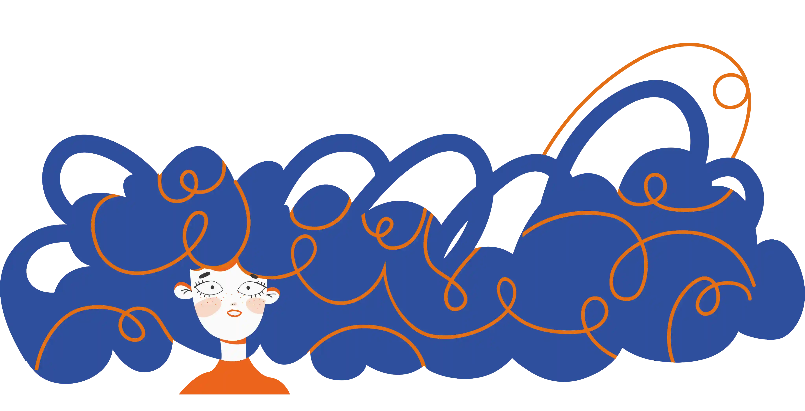
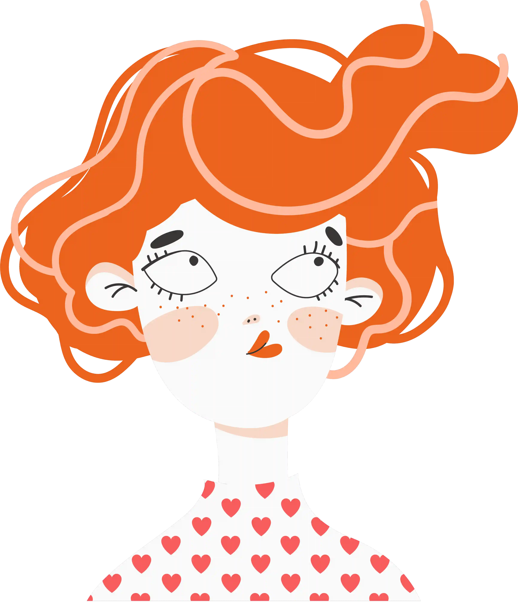

Pełny Kompleks (ok. 2h):
Dwuetapowe strzyżenie, mycie, dedykowana pielęgnacja i stylizacja. Rekomendowane przy pierwszej wizycie lub zmianie kształtu.
Odkryj precyzję autorskiej metody cięcia pasmo po paśmie, która eliminuje nieprzewidywalność i pozwala uzyskać idealny kształt Twoich loków zaraz po wyjściu z salonu.
Pełna kontrola formy: widzimy ostateczny kształt fryzury w trakcie pracy, co zapobiega zbyt krótkiemu cięciu.

Eliminacja efektu trójkąta: precyzyjne budowanie warstw nadaje lokom lekkość i odpowiednią objętość.

Zdrowa struktura: usuwamy tylko zniszczone końcówki, zachowując integralność naturalnego skrętu.
Zarezerwuj termin
Dwuetapowe strzyżenie, mycie, dedykowana pielęgnacja i stylizacja. Rekomendowane przy pierwszej wizycie lub zmianie kształtu.
Odświeżenie formy dla stałych klientów. Zamiast mycia stosujemy reanimację skrętu, co oszczędza Twój czas i zapewnia świetny efekt.
Niektóre rodzaje włosów mogą skorzystać z sauny parowej SPA (100 zł)! Zapytaj fryzjera podczas wizyty.
